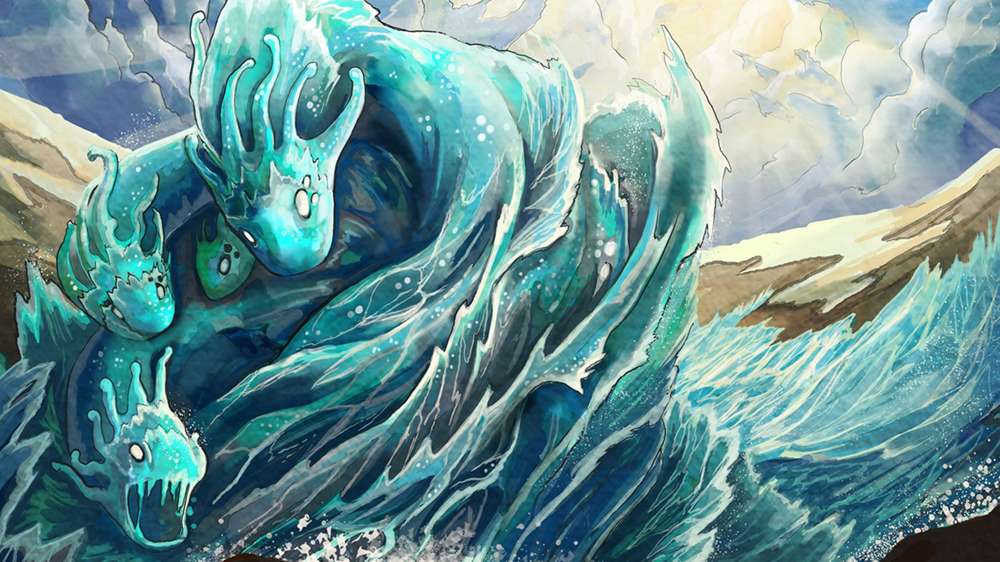
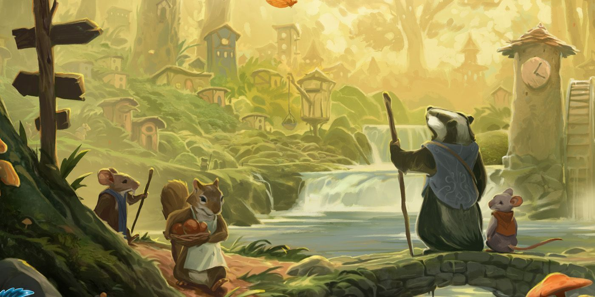
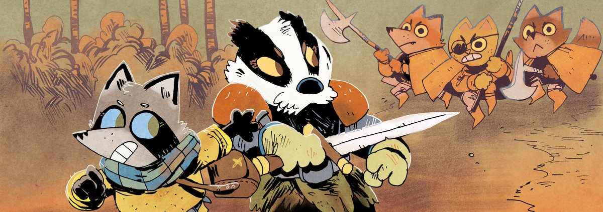

"Non si smette di giocare quando si invecchia, si invecchia quando si smette di giocare."
~ G.B. Shaw

"Si può scoprire di più su una persona in un'ora di gioco che in un anno di conversazione"
~ Platone

"Me lo spieghi mentre giochiamo!"
~ qualcuno che non vuole più essere invitato